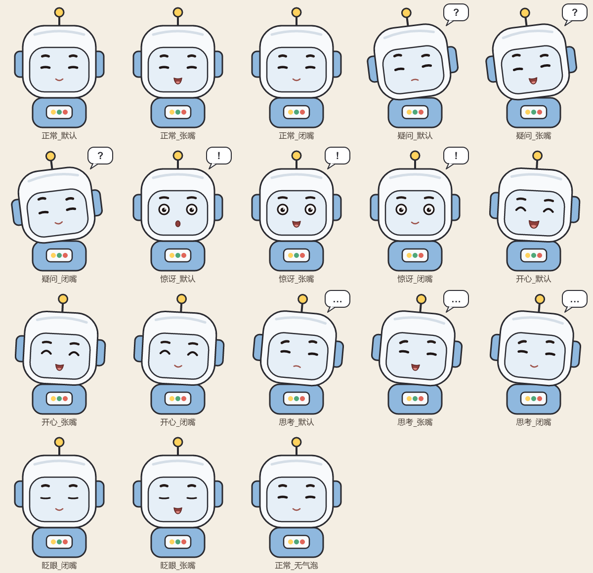

用 AI 做会说话的讲解视频
全程不打开剪辑软件
写好稿子，双击一下，就能得到一条带虚拟形象对口型、手账风动画、关键词字幕的讲解视频。声音用 AI 配音（免费，音色随便换）或者自己录都行。
⏱ 第一次大约 30 分钟（大部分时间在装软件），之后每条视频只要：写稿 → 选声音 → 双击。
目录
做出来是这样的

右下角的小机器人“小方”是示例形象，会跟着声音张嘴、眨眼、换表情：

1下载解压，认识文件夹
- 从群公告里的链接下载
AI讲解视频流水线.zip。 - 先解压再用：Windows 右键压缩包 →「全部解压缩」；Mac 双击压缩包。
不要在压缩包里直接双击文件，会运行失败。 - 解压后放在哪都行（桌面、D 盘都可以）。
文件夹里有什么
| 名字 | 干什么用 |
|---|---|
| 0-先看我-完整教程.html | 就是你正在看的这份教程 |
| 1-双击安装环境.bat | Windows：第一次用时双击，自动装好需要的东西 |
| 2-双击出片.bat | Windows：以后每次做视频都双击它 |
| Mac-安装环境 / Mac-出片 | Mac 版的上面两个（第一次要“右键 → 打开”） |
| 稿子.json | 你的稿子，每次做新视频就改它 |
| 3-查看AI音色.bat | Windows：列出所有能用的 AI 配音音色（Mac 版同理） |
| 我的录音 文件夹 | 空着 = 用 AI 配音；放进一段音频（自己录的或配音工具生成的）= 用这段音频 |
| 成片 文件夹 | 做好的视频在这里 |
| 程序文件 文件夹 | 程序本体，一般不用打开 |
2安装环境（只做一次）
需要三个免费软件：Node.js（运行画面程序）、Python（处理声音）、ffmpeg（合成视频）。
- 双击
1-双击安装环境.bat。
如果弹出“Windows 已保护你的电脑”，点「更多信息」→「仍要运行」。 - 它会检查缺什么。提示缺软件时按 Y，会自动安装（5–10 分钟）。
- 装完关掉窗口，再双击一次，这次会继续装剩下的依赖。
- 看到「安装完成！」就好了。
- 先装 Homebrew（Mac 的软件安装工具）。国内网络推荐用镜像：搜索「清华大学开源软件镜像站 Homebrew」，照着页面上的命令装。
- 右键
Mac-安装环境.command→「打开」→ 再点「打开」。 - 看到「安装完成！」就好了。
自动安装失败？手动装（Windows）
- Node.js：打开
nodejs.org/zh-cn，下载「LTS 长期支持版」，一路下一步。 - Python：打开
python.org/downloads，下载安装。第一个界面一定勾选「Add python.exe to PATH」。 - ffmpeg：在开始菜单搜「PowerShell」打开，粘贴下面这行回车：
装完三个，关掉所有窗口，重新双击 1-双击安装环境.bat。
3先做一条示例视频
先别急着写自己的稿子，跑一遍示例，确认环境没问题。
- 确认
我的录音文件夹是空的（这样会用 AI 配音）。 - 双击
2-双击出片.bat（Mac：右键Mac-出片.command→ 打开）。 - 等它跑完。一条 20 秒的视频大约要 5 分钟，窗口里会显示进度。
- 完成后会自动打开
成片文件夹，里面就是你的第一条视频 🎉
4用 AI 写你自己的稿子
用豆包、DeepSeek、Kimi 这些国内 AI 就行，分两步：先写稿子，再把稿子变成程序能读的格式。
① 让 AI 帮你写口播稿
复制下面的话，把方括号里的内容换成你的，发给 AI：
② 让 AI 把稿子变成「稿子.json」
稿子满意后，再复制下面这段发给 AI（把稿子粘贴在最后）：
③ 把结果放进「稿子.json」
- 右键
稿子.json→「打开方式」→「记事本」（Mac 用「文本编辑」）。 - 全选删除原来的内容，粘贴 AI 给你的 JSON，保存。
```json 这样的符号，粘贴前删掉，只保留从 { 开始到 } 结束的部分。5选声音，做出你的第一条视频
三种方式任选一种。规则只有一条：我的录音 文件夹里有音频，就用这个音频；没有，就用内置 AI 配音。
方式一：内置 AI 配音（最简单，免费）
什么都不用准备，我的录音 空着，直接双击 2-双击出片 就是 AI 配音（需要联网）。
换音色：
- 双击
3-查看AI音色.bat（Mac：Mac-查看AI音色），会打开一份「AI音色列表」，里面是所有能用的中文音色：普通话、粤语、台湾腔，还有方言，标了男声/女声。 - 用记事本打开
稿子.json，把第 3 行"voice"后面引号里的名字，换成列表里的任意一个，保存。 - 双击出片，听效果。不满意就换一个再出。
rate 是语速：+10% 更快，-10% 更慢。想让某一句换个声音（比如做对话），在那一句里也加一行 "voice": "音色名" 就行。
方式二：用其他配音工具（音色更多、更有感情）
剪映的「文本朗读」、豆包 / 火山引擎的语音合成、魔音工坊等国内配音工具，音色选择更多，很多还能复刻你自己的声音。接入方法：
- 在配音工具里选好音色，把稿子按
稿子.json的顺序粘进去。 - 每句之间加半秒停顿：每句单独一行，或者用工具的「插入停顿」功能。
- 导出成 mp3 或 wav，放进
我的录音文件夹，双击出片。
方式三：自己录（手机就够）
- 找个安静、软的地方录：衣柜里、床边被子旁边，回声最小。手机离嘴 15–20 厘米，开飞行模式。
- 点开始后先安静 1 秒，再按稿子顺序读，每句之间停半秒以上。
- 读错了就停一下把这整句重读，录完把读错的那段剪掉（或者整段重录）。
- 把录音传到电脑（微信「文件传输助手」最方便），放进
我的录音，双击出片。
方式二、三的音频，程序都会自动：降噪、去齿音、统一音量 → 按停顿切句 → 对口型 → 出片。支持 m4a、mp3、wav、aac、flac，文件夹里只放一个音频。
6发到抖音
- 成片是 1920×1080 横屏，直接上传就行。
- 背景音乐在抖音里加：发布时选「选择音乐」，挑一首轻快的，把音乐音量调低（30% 左右），版权由平台解决，最省心。
- 把这期的「可以直接抄的东西」（提示词、清单）写在视频文案里，大家复制更方便。
7进阶：换成你自己的形象、加新画面
改形象、加画面需要改代码，交给 AI 来做。这一步推荐用能直接读写文件的 AI 编程助手，比如 Codex、腾讯 WorkBuddy / CodeBuddy、字节 Trae、阿里通义灵码等。
- 用 AI 编程助手打开
程序文件文件夹。 - 先对它说：“先读 SKILL.md，了解这个项目。”（SKILL.md 是写给 AI 看的操作手册）
- 再发下面的提示词。
做自己的卡通形象
加一种新画面
只有豆包、DeepSeek 这种聊天 AI 也能做：把 程序文件/SKILL.md 和要改的文件内容复制给它，让它改好后发回给你，你再粘贴回去。
8常见问题
完全不会编程，能做出来吗？
能。前 6 步只需要：双击、复制粘贴、改一个音色名。改代码的事交给 AI。
只有国内的 AI，能复现吗？
能。整套东西是普通的程序，不依赖海外服务。写稿用豆包、DeepSeek、Kimi 都行；改代码推荐用能读写文件的 AI 编程助手。需要联网的只有内置 AI 配音；用配音工具导出的音频或自己录音，出片完全离线。
双击 .bat 一闪就没了 / 没反应？
多半是还在压缩包里，先「全部解压缩」。如果被杀毒软件拦了，选择「允许」。
提示“不是内部或外部命令”？
软件没装好，或者装完没有重新打开窗口。关掉所有窗口，重新双击安装环境。
画面里的中文是方框？
没找到中文字体。Windows 自带微软雅黑、Mac 自带苹方，一般不会出现；出现的话把报错发到群里。
出片好慢？
正常，每 1 秒视频大约要 10–15 秒。1 分钟的视频十几分钟，可以先去做别的事。
嘴型对不上 / 动得太快？
嘴型是按声音大小自动算的，已经限制了开合速度。声音越干净，嘴型越准。
AI 配音失败 / 卡住不动？
内置 AI 配音需要联网，换个网络再试一次。还不行，就用第 5 步的方式二：在剪映等配音工具里生成音频，放进 我的录音。
改了音色名，出片报错？
音色名要和「AI音色列表」里的一字不差（包括大小写），引号和逗号不要删。
能做竖屏吗？
目前是横屏。想要竖屏可以按第 7 步让 AI 改，需要重新排版。
怎么改栏目名、配色？
栏目名：稿子.json 第一行的 channel。配色：让 AI 改 程序文件/template/render.js 开头的颜色。
版权说明
- 代码：随便用、随便改，做个人或商业视频都可以，但请不要打包倒卖。
- 示例形象“小方”：随便用、随便改。
- 字体用的是你电脑自带的；音效是程序现场合成的，没有版权问题；背景音乐建议在抖音里加。
做出来了欢迎在群里晒！遇到问题，把报错截图发到群里。
每期视频都会给一份能直接抄的东西 · 我们下期见